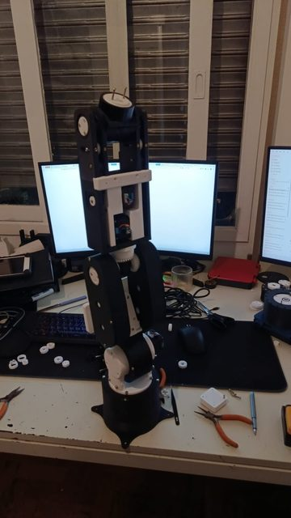
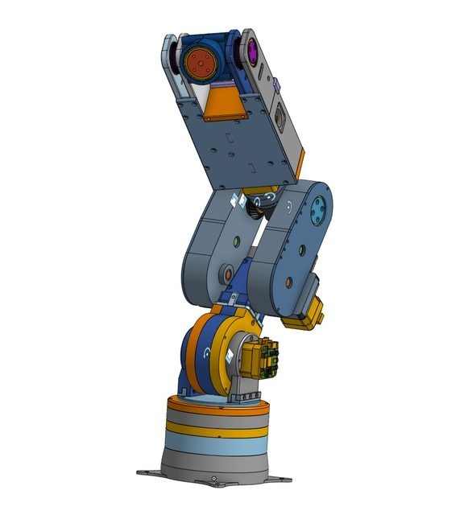
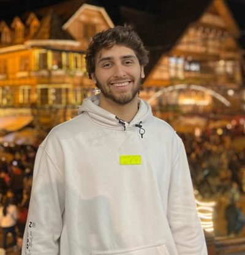

Contributed to Granite 4 safety through RAG systems and LoRA adapters, and managed GPU workloads on Kubernetes.
An Octo VLA teacher distilled into a compact RL student on a parallelized Franka Panda arm in IsaacSim.
Local agents orchestrating text, code, image, video, mesh generation and much more.
A 6-DoF robotic arm built from scratch: CAD, gearing, firmware, and the policy that drives it.
All the actuators were designed, printed and built by me.


I'm truly passionate about learning new skills and employing them towards making the world a better place.
Off the clock, I'm always trying to do interesting things, like playing the piano, the guitar, chess and other games.
This song is Divenire (Ludovico Einaudi). It translates from Italian as roughly "to become". To me it beautifully captures the feeling of "becoming" more than I once was. With each challenge and each project, we do much more than produce a new software or robot, we become the person who created. Oddly, I often feel a weird empty feeling after a project, mixed with relief and joy, yes. But it is always when I finish that I noticed it was not the robot I wanted, but to become the person who built them.

MS thesis on VLA distillation · NS-VLA · building a 6-DoF arm
Docker · CAD · CUDA · PyTorch · VLA · MCP · ComfyUI · CAN Bus · ESP32 · IsaacSim · LoRA · Kubernetes · and more
This site is a scroll-driven 3D tour of my workshop, made for big screens. On your phone, my mobile-friendly portfolio has everything.
Open my portfolio →